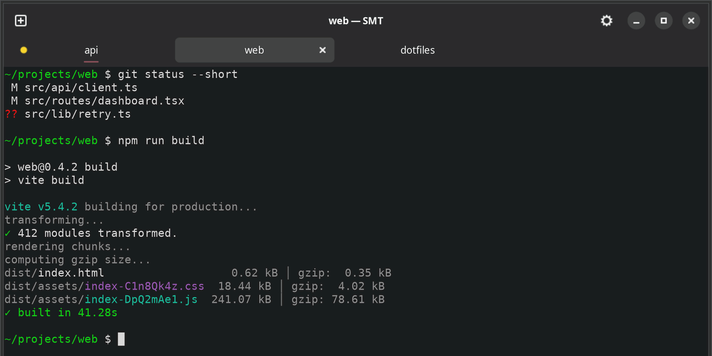

cat simple-multi-terminal/README.md
# simple-multi-terminal
A terminal that does five things and nothing else: tabs, splits, rename, persistent paths, and a dot that tells you which tab wants you.
| role | Sole designer and engineer |
|---|---|
| built_with | Python, GTK4, VTE, libadwaita |
| platforms | Linux and macOS |
| source | github.com/AkiraVD/simple-multi-terminal |

api is a job asking for something while you work in web.cat simple-multi-terminal/problem.md
## The problem
Running long jobs in several tabs means constantly checking tabs that have nothing to say. The thing you actually want to know — which tab needs me, which one failed — is the one thing a terminal doesn’t tell you.
cat simple-multi-terminal/decisions.md
A dot, not a spinner — because the spinner was measured
An animated spinner cost ~5% of a core while it turned, and 13% with four tabs going. A static dot costs 0.0–0.2%, the same as an idle tab.
Two signals that usefully disagree
The shell marks a command running at preexec — one printf, measured at 12 µs against the ~246 µs a forked helper costs. Agent hooks mark the finer state inside a long session that the shell sees as one command.
A precedence rule, so a tab is never ambiguous
Working outranks finished, and a failure outranks both. In a split tab the dot speaks for whichever pane has the most to say.
Making a Python app behave like a real macOS app
macOS names a process after the image it ends up running, so the Dock would say “Python”. The bundle carries its own copy of the interpreter under the app’s name, so nothing ever leaves the bundle.
cat simple-multi-terminal/measured.txt
| eight tabs open | 49.9 MB total PSS, including the eight bash processes |
|---|---|
| for scale | VS Code’s main process alone: 115 MB, same machine |
| status dot | 0.0–0.2% of a core, against ~5% for a spinner |
| shell notification | 12 µs per command, against ~246 µs forked |
cd ../todo